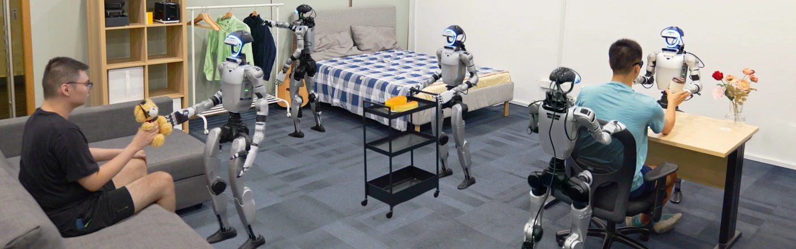
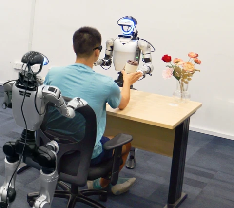
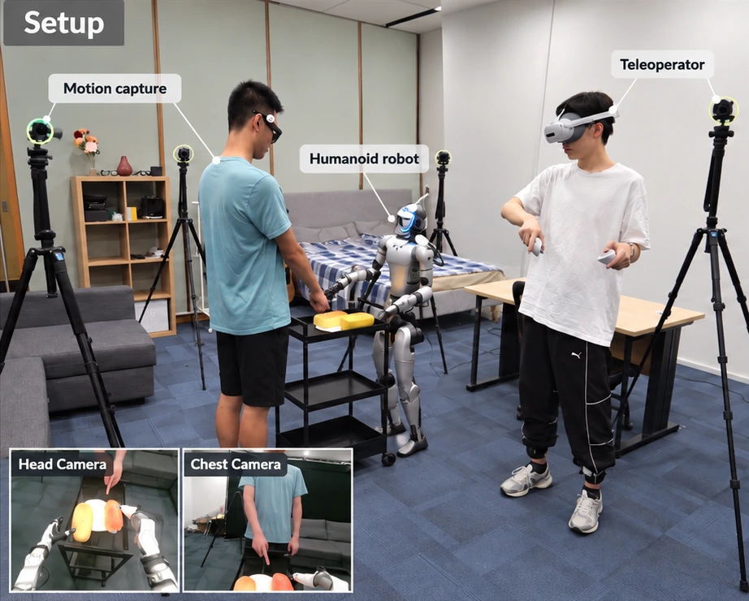

Can humanoids
read the room?
Human gaze. Human gesture.
Human posture. Robot action.
in humanoid manipulation.

A shared understanding.EXPERIMENT SCENES · FIG. 01
Understanding the person behind them.SCROLL TO DISCOVER↓
There’s more
to an action
than the task.
A person points. Pauses. Begins to sit.
Changes their mind.
People coordinate through more than words. For a humanoid to collaborate, it must connect those signals to the right object, the right response, and the right moment.
ROOM pairs human nonverbal behavior with the robot actions it calls for—under task instructions that leave the target or response open.
Which object do you mean?
Are you ready for me to act?
Should I change what I’m doing?
Human signals.
Robot responses.
One interaction. Both sides of the story.
A synchronized record of human behavior
and humanoid manipulation.
Demonstrations
§III-AInteraction tasks
§III-ASynchronized streams
§III-D GAZE + HAND LANDMARKS01 / 05
GAZE + HAND LANDMARKS01 / 05Attention becomes a referent.
Timestamped gaze from Project Aria connects what the person looks at with the objects in the interaction.
Human egocentric observation · Fig. 1 · §III-D / §IV-BOne shared clock.
30 Hz / SYNCHRONIZED40 ways
to read the room.
Two grounding requirements.
Four interaction functions.
Tabletop and whole-body collaboration.

Table OrganizationTable Organization
The same instruction can refer to different objects. Gaze and pointing resolve what the person means, even among similar-looking distractors.
Tasks can require more than one grounding function. The examples above are the four evaluation task groups, rather than a complete list of all 40 tasks.
A room built
to capture interaction.
A human partner, a humanoid,
and a separate teleoperator.
Recorded together in a home environment.

Wearable observations are processed with Machine Perception Services to recover timestamped gaze and hand motion.
§III-C–DThe semantic behavior classifier is trained with supervision from the external motion-capture system; inference uses skeletons from the robot’s head and chest cameras. §IV-B
From human behavior
to robot action.
Human points.
“That object.”Human begins to sit.
“Now.”Human corrects.
“Change the plan.”How should a policy receive the signal?
CONTROLLED COMPARISON · GR00T N1.7Robot-view skeletons
Raw human behavior
Behavior classifier → text
Semantic language tokens
VLM language input
GR00T N1.7
Robot action
Action expert
Give behavior a meaning.
A lightweight classifier translates recognized gestures and posture into descriptions, updating the task instruction as human behavior changes. At inference, it uses onboard camera observations.
The strongest representation variant in both evaluated tasks: 15/25 successes in Action Correction and 17/25 in Seating Assistance.
§IV-B–C / §V-DInspect the full architecture from the paper FIG. 03 +

Does ROOM
actually help?
Mean task-success gain with ROOM pretraining.
Across the evaluated policies & conditions · §V-B
TG: fine-tune on the corresponding task group. ROOM + TG: pretrain on all 40 ROOM tasks, then use the same task-group training. Standard robot views and task instructions in both settings.
Fig. 4 · 25 rollouts per policy and task condition, distributed across three participants (§V-A). † The draft reports 22.9% for π0.5 on Cart Delivery; the denominator requires confirmation.
View exact benchmark values DATA TABLE +
| Task / condition | OpenVLA-OFT | π0.5 | GR00T N1.7 |
|---|---|---|---|
| Table Organization / Clutter | 8 → 44 | 20 → 64 | 28 → 72 |
| Table Organization / Distractors | 4 → 24 | 12 → 52 | 16 → 68 |
| Table Organization / Unseen objects | 8 → 36 | 16 → 56 | 24 → 64 |
| Action Correction / Clutter | 16 → 40 | 28 → 64 | 24 → 64 |
| Action Correction / Distractors | 8 → 24 | 16 → 52 | 20 → 76 |
| Action Correction / Unseen objects | 12 → 32 | 24 → 64 | 28 → 68 |
| Seating Assistance / Whole-body | 8 → 24 | 16 → 36 | 24 → 60 |
| Collaborative Cart Delivery / Whole-body | 4 → 24 | 12 → 22.9† | 16 → 44 |
Not every robot failure
is a control failure.
The robot can execute a movement correctly—and still misunderstand the human.
The wrong target.
The robot selects an object or location the person did not intend.
The wrong moment.
The robot chooses the wrong response, acts too early, or misses the cue to change.
The right idea. A failed action.
The decision is correct, but grasping, transport, placement or handover fails.
Where does the interaction break?
Fig. 5 / §V-C · GR00T N1.7 · 75 trials per setting. Each failed rollout is assigned to its first failure. Counts are aggregated from the stage-wise decomposition; this analysis is separate from the Fig. 4 benchmark.
Less talking.
More understanding.
Humans shouldn’t have to
micromanage every robot action.
12-participant user study
Pick that.
Wait. Now move.
No, stop.
A point.
A gesture.
A shared intention.
Decision accuracy ↑
28/50 → 40/50 trials
Task success ↑
24/50 → 36/50 trials
Perceived workload ↓
Adapted NASA-TLX · lower is better
Both conditions use semantic prompting, the same goal-level instruction, the same ROOM-pretrained checkpoint, and equal demonstration counts and training budgets.
Table II / §V-E · TLX: mean ± SD across participants; six adapted dimensions rated 1–7 and rescaled to 0–100. The draft reports the same TLX summary for both tasks. Gesture and posture are the main study signals; gaze is evaluated separately.
Teach the action.
Ground the interaction.
Capture the person, not just the scene.
Pair human gaze, gestures and body motion with the robot responses they call for.
Measure understanding as well as execution.
Distinguish target-selection and interaction-state errors from physical failures.
Make collaboration easier for the human.
Study policies that adapt to ongoing behavior, reducing the need for detailed verbal guidance.
Gaze & gesture ablation STUDY DESIGN +
The paper specifies a controlled comparison of RGB-only, gaze-only, gesture-only, and combined gaze + gesture inputs for Table Organization, with matched instructions, data splits and training budgets.
Table III in the supplied manuscript has no numerical results. Complementary benefits are an open question in this draft.
Read the ROOM.
ROOM: A Human–Humanoid Interaction Manipulation Dataset for Nonverbal Behavior Grounding
Anonymous Authors · Research manuscriptCitation
@misc{room,
title = {ROOM: A Human–Humanoid Interaction
Manipulation Dataset for Nonverbal
Behavior Grounding},
author = {{Anonymous Authors}},
note = {Research manuscript; publication details pending}
}Provisional citation for the anonymous manuscript. Final author and publication metadata will be added when available.